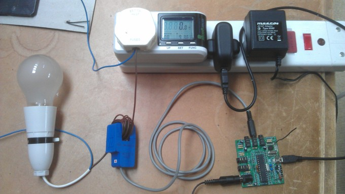
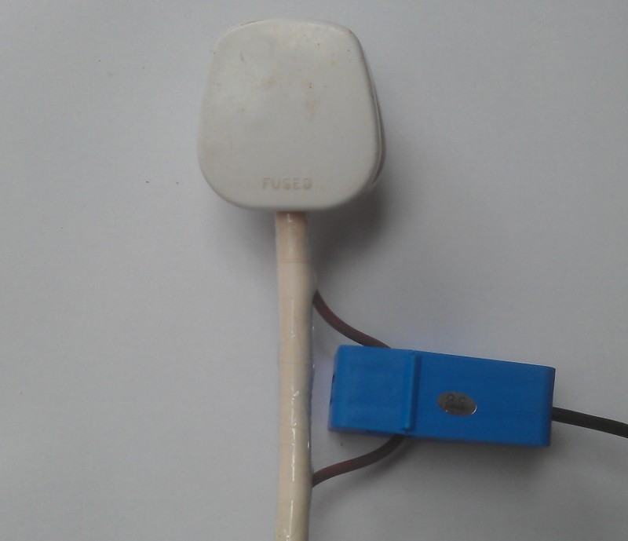

Hi everyone
I stumbled upon this project after looking for inline and clamp power monitors and it looks really promising. I'm looking to record power/energy usage of various devices around the home over time. I'm not interested in recording my total mains energy usage, just specific devices. Therefore I'm looking for the sensor and datalogger to be reasonably robust and portable and able to move it around the home with relative ease.
I'd like to find a way of accessing this data so a RaspberryPi can poll for the values and record them in a database. Either a USB or serial connection would be fine, though I see from the site that wireless might also be an option. I will then process this data into graphs and perform statistical analysis from there.
Initially I was looking for an inline socket-based monitor that could expose its data in a standard format. Alternatively a clamp-style sensor (such as the SCT-013-000 CT sensor in the shop) clamped around the input cable would also work and allow me to move the power monitoring without turning the device/appliance off.
My concern with clamp-style sensors was that the diameter of the cables to be monitored varies greatly and for devices plugged directly into sockets I would have to use an extension in those cases. Does a clamp-style sensor need to be clamped snugly around the input supply wire, or can it be used on devices where the supply wire is smaller than the diameter of the clamp?
Does anyone have any suggestions as to the best way to achieve my overall objective?
From looking around this site a clamp sensor (and temperature sensor, may as well record temp as well) connected to an emonTx , to a wireless receiver module attached to a RaspberryPi looks good.
Is there a way to attach the emonTx directly to a RaspberryPi so I could run the whole thing from a single USB power supply and contained in a single (Lego) case?
I'm not too concerned about wireless transmission of the data, unless the indoor range and signal reliability is good enough. What's the indoor range like of the wireless transmission between sensor nodes and base station at these frequencies?
Would it be affected by any other domestic radio signals from microwaves, DECT telephones and WiFi networks etc?
Cheers, B
Re: Power monitoring of plugged in devices/appliances
The first thing to point out is a c.t. does not work when clipped around a two-wire cable (with or without an earth) where the two wires are carrying the same current in opposite directions. So that one falls at the first hurdle.
I think you have little choice but to be looking at the inline socket-based monitor configuration that the commercial plug-in energy monitors use - where you plug the monitor in to the wall and the appliance in to the monitor. Then you can use the cheaper and smaller ring-core c.t., and you can tap off the voltage supply to obtain the power to operate. If you're using wireless then you can potentially (subject to channel occupancy and data collisions) have many measurement nodes reporting to one base station.
The range indoors depends very much on the construction of your house - wood and it's excellent, 1 metre of solid stone and you'll be lucky to get out of the room. You need to choose the rf band that's least affected by other interfering signals.
Re: Power monitoring of plugged in devices/appliances
Many thanks for the reply and the information. So it does sound like I'll have to try and find an inline power meter that exposes its data somehow. I should emphasise that I am a software guy looking to learn some basic electronics and hardware hacking.
Or I could take one of these... http://www.belkin.com/uk/null-Belkin/p/P-F7C005 and try and disconnect the socket from the sensor and take my own readings from the wires. I don't suppose anyone knows if that's possible or anyone has attempted this?
If I was to buy one of these and experiment, what sort of kit might I need to try and access the signals that are being transmitted? At least as a start point to assess whether it will be possible to rig something up?
Cheers, B
Re: Power monitoring of plugged in devices/appliances
It could be quite a challenge to access the signals, the information on decoding the rf packets is generally not out there from what I've gathered. Maybe the easiest option but not that elegant would be to create an assembly where the separate live and neutral wires are accessible, you'd have a plug on one end and a socket on the other, the easiest way to do this is to allow a bit of the external sheeting on the cable going into a four-bank, a bit like in the picture:

Id only do this if you where comfortable with rewiring a plug and removing some sheathing without exposing any live wiring though.
Re: Power monitoring of plugged in devices/appliances
Ah I think I see what you mean. Yeah I'd be reasonably comfortable with doing that.
I guess I could do it with a 1 gang extension lead like this... http://www.amazon.co.uk/Quality-extension-extention-Electrical-Electric/...
Remove enough of the sheath so enough live wire is exposed to be coiled around the clamp. How much live wire needs to be exposed to coil around the clamp?
What could I do I with the free hanging neutral/earth wires? I'd quite like this to be a fairly sturdy project with enough wire clamps to stop too much movement in the cables to reduce the chance of any melt-downs!
Cheers, B
Re: Power monitoring of plugged in devices/appliances
You dont actually need to coil as I have done above, just clip it around the wire with the wire being straight. Coiling multiples the current and it was a technique I was using for the accuracy test that that picture is from. So you should only need about 2-3 inches of say only the brown live conductor visible. The neutral and earth could remain inside the white sheathing and then you could tape it up cleanly. Il see if I can take a better picture of one here.
Re: Power monitoring of plugged in devices/appliances
A small point to be aware of:
The white plastic sheath is mechanically strong and is there for protection against cuts and the like. The brown or blue insulation is electrically good but mechanically weak.
Therefore, whenever the sheath is removed from a cable, you must take extra care not to damage the insulation.
Re: Power monitoring of plugged in devices/appliances
Here's a better pic:

+1 as Robert said, watch cutting into the live, neutral or earth when you cut the white sheathing.
Re: Power monitoring of plugged in devices/appliances
Wow nice photo, that looks pretty sturdy.
Great so I could even shorten the extension cable between the plug and socket to 20-40cm to make things a bit more compact.
Could I wrap the live wire in some thicker tape for extra strength? Then also add a ferrule/collar to the points where I've split the wires out. Or would extra taping around the live wire reduce the signal strength picked up by the sensor?
What's the internal diameter of the clamp? Can you pad it out so the live wire doesn't move around inside it?
I might actually buy one of those Belkin units just as an exercise in exploration to take apart the display unit. Might there be something useful in there which would allow me to decode the sensor signals?
Finally, this is a real noob question. What is the signal that would be exposed by this clamp sensor and how would I convert that to power in W (J per sec)? Or is that handled by the sensor base station?
Cheers, B
Re: Power monitoring of plugged in devices/appliances
Could I wrap the live wire in some thicker tape for extra strength?
That would help. Possibly better: spiral nylon wrapping, available in various sizes.
Then also add a ferrule/collar to the points where I've split the wires out. Or would extra taping around the live wire reduce the signal strength picked up by the sensor?
No, the current transformer is a transformer and works on magnetic fields.
What's the internal diameter of the clamp?
About 12 mm - check the data sheet!
Can you pad it out so the live wire doesn't move around inside it?
If you wish.
I might actually buy one of those Belkin units just as an exercise in exploration to take apart the display unit. Might there be something useful in there which would allow me to decode the sensor signals?
? ? ? The output from the current transformer is a current wave - a scaled-down version of the current it is measuring.
Finally, this is a real noob question. What is the signal that would be exposed by this clamp sensor and how would I convert that to power in W (J per sec)? Or is that handled by the sensor base station?
You can't convert current to Power! You must factor in other things, like the voltage and the relationship between the voltage and current waves. Read all about it in Building Blocks. The maths is done in the emonTx (if that's what you elect to use) or the equivalent unit that is fed with both current and voltage analogue inputs.
Re: Power monitoring of plugged in devices/appliances
Awesome, I might pad the clamp out with some polystyrene or bubble wrap... that shouldn't cause a heat issue should it?
Yes I realise it's far more complicated than I made out and that it's not a case of just directly measuring the power. To be honest I'd like to use this as a learning exercise and perform all the calculations myself, once I'm recording the data.
The clamp measures the current but what measures the voltage?
This all sounds great so far though.
Is there a board that attaches to the raspberry pi which can accept the sensor input directly? I'd like to avoid having a separate sensor node and raspberry pi+RFM12Pi. Though separating the sensor from the logger does have its advantages.
Cheers, B
Re: Power monitoring of plugged in devices/appliances
For added safety, I tend to expose the Neutral for clamping rather than the Active. You can see I've got 5 CTs of different sizes clamped around the Neutral of the extension lead. Assuming you have no ground faults, the current flowing in one should be identical to the other, just in the reverse direction, so just flip the CTs 180 degrees if you want the phase to remain the same.
Re: Power monitoring of plugged in devices/appliances
I might pad the clamp out with some polystyrene or bubble wrap... that shouldn't cause a heat issue should it?
It might well do. It will depend on the cable size and the current it's carrying. It's not a good idea to thermally insulate any cable or wire. (Technically, there's no difference between the wire in a flexible cord and the wire in an electric fire. Both get hot when carrying current - it's just that one is designed to and the other does but the size is chosen so that it stays relatively cool).
I'd like to ...... perform all the calculations myself Really? The emonTx calculates the rms current by multiplying current and voltage, then taking the average. It takes about 250 readings per second. You must be pretty good to keep up with that. ;-)
what measures the voltage? This or this.
Re: Power monitoring of plugged in devices/appliances
dBC: For added safety, I tend to expose the Neutral for clamping rather than the Active.
I understand what you're saying, but technically both are live conductors and both should be treated with equal respect. It only takes the neutral connection to fall off and everything then is at full line voltage - and just as dangerous as the line conductor, probably more so even because you don't expect it.
Re: Power monitoring of plugged in devices/appliances
Absolutely, but in the case of no additional faults other than a bit of undetected damaged insulation during the butchering phase, I'd rather be bumping into exposed copper on the blue wire than the brown wire.
Re: Power monitoring of plugged in devices/appliances
This is great info.
If I need to measure the voltage with an AC adaptor, where does that get plugged in? I guess I would need a 2 gang extension lead, one for the appliance I'm monitoring and another for the voltage sensor?
Is there a way to directly connect the emonTx to the RaspberryPi, so the whole lot can be powered from a single power supply?
I'm not sure this is going to be as robust or self-contained as I was hoping. I might end up buying and butchering one of those Belkin units to see if there's anything in there I can tap into.
Re: Power monitoring of plugged in devices/appliances
Time to take a step back. Why don't you read the Atmel Application Note about designing an energy meter? OK, parts might be a bit more complicated than you need, and you might want to add better recording facilities, but I feel it might be a better starting point, it would be certainly be worth studying. It's AVR465 - doc2566.pdf
If you do decide to follow this design, take careful note of the warnings regarding working on live equipment, particularly the need to isolate ALL connections when programming and testing.
If you don't go that route, then I would be looking at a large plastic box onto which you would mount a socket for your appliance, it would plug in to the mains via a short lead, and inside the box you would have a voltage transformer, a current transformer and whatever signal conditioning and recording you want - you seem to be looking at a Raspberry Pi plus analogue input board.
If you go the radio route, it's basically the same but your box now houses an emonTx to do the signal conditioning and transmitting; and you have your receiver and logging elsewhere. And with the same safety warning (i.e. you must double-insulate everything and work to the standards used in GIVmon, and you must have no connections to the outside world for programming or data) you could dispense with the voltage adapter/transformer and do as GIVmon does for its input.
I don't know what your level of expertise or experience with electrical and electronic construction is, but from what I've read so far, I would advise you use the emonTx + c.t. + packaged voltage adapter.
Re: Power monitoring of plugged in devices/appliances
Also, have a look at the Hexabus plugs and the "hacked" Hexabus plugs by Bart from Flukso. https://www.flukso.net/files/presentations/flukso.20121026.hack_hexaplug...
Re: Power monitoring of plugged in devices/appliances
You can also use the Sailwider / Current Cost plugs for this. They include both measurement and remote switching, RFM12B compatible.
Jack Kelly sometimes posts here - his github has all of the code you need for this.
P.
Re: Power monitoring of plugged in devices/appliances
Does anyone know if the currentcost IAMs measure V these days? Last time I enquired they only measured Irms and then multiplied that by a hard-coded (or possibly configurable) V to give a very rough estimate of power.
Re: Power monitoring of plugged in devices/appliances
Could we develop a "OpenEnergyMonitor" plug ourselves and do crowdfunding to lower the production costs? Maybe by using the same chip as Hexabus does? Analog Devices has cool chips for this: http://www.analog.com/en/analog-to-digital-converters/energy-measurement/products/index.html
Then we develop a PCB to fit it in a OKW plug case or when you succesfully crowdfund such a device, custom injection molded case.
Re: Power monitoring of plugged in devices/appliances
Does anyone know if the currentcost IAMs measure V these days?
As I understand it, they report power, but using measured (rather than hard coded) voltage and current. At least, I'm pretty sure that the Sailwider ones do (and so probably the EDF IAMs too). Not sure about the original "monitor only" CurrentCost IAMs - they might be dumber.
P.
Re: Power monitoring of plugged in devices/appliances
Fluppie, do you know where you can buy that OKW case? It would be ideal for an RF remote on a Mk2 system...
P.
Re: Power monitoring of plugged in devices/appliances
If I'm right Telerex Europe has them. Or you can send the guys at OKW an e-mail?
Re: Power monitoring of plugged in devices/appliances
Damn - looks like the UK version doesn't get an integrated socket.
Might be easier to just buy a commercial IAM, and pull the existing guts out.
P.
Re: Power monitoring of plugged in devices/appliances
I'd definitely pledge money for that.
I'm sure there's a way you could use the existing emonTx and various boards, all it seems I need is an inline AC voltage sensor with a clamp around the live/neutral wires inside.
The problem is that I don't have much experience in electronics/electrical construction, I'm a software guy, but I'm willing to learn, though learning with mains voltage AC circuits is pretty scary! Another problem is that I have hardly any spare time these days.
Cheers, B
Re: Power monitoring of plugged in devices/appliances
I think if we modify the HexaBus plug to RFM12B and Jeelib we can achieve something!
In this PDF there are scheme's and parts lists: http://openenergymonitor.org/emon/sites/default/files/HexaBus_Plug.pdf